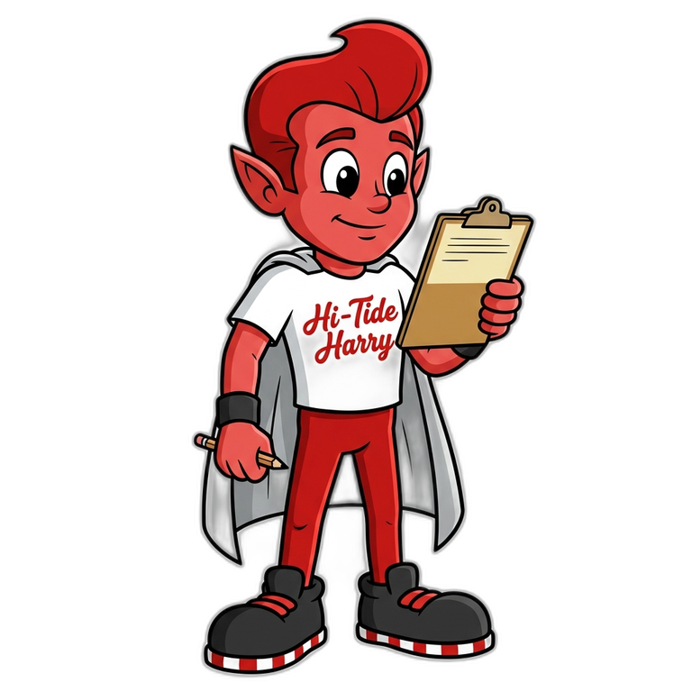

SAMPLE · NOT VALID FOR ENTRY

Miami Beach Senior High · Class of 1996
Administrative workspace
One operational workspace. Your assigned role determines which tools and records you can use.

One protected record
Private event operations
Dinner submissions are linked by normalized email. Dietary and accessibility details stay inside permission-controlled operations.
Teach Harry, help classmates
Review unanswered questions, draft a human response, and turn recurring questions into approved knowledge.
Open a portal conversation to read its timeline and send an accountable reply. Harry questions remain in the Harry Desk until they are attached to an attendee.
Safe artwork preview
Create a printable demonstration for committee review. It is never saved, never enters the ticket wallet, and cannot be used for check-in.
Miami Beach Senior High · Class of 1996
This is the actual WordPress content registry—not a mock list. Your permissions determine whether you can review, edit, or publish.
Assign attendee, committee member, committee lead, or Site Owner access. Every change is audited.
The real WordPress component registry controls page sections, audience, status, CTA, and placement.
Open full component editorResend delivery, retry, dead-letter, reconciliation, and worker health are owner-only.